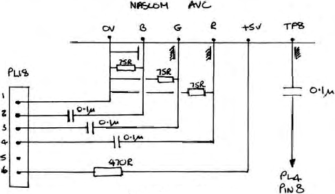

near the mains input plug and directly in front of the tuner. On
the TX10 it is an the vertical panel to the right of the tuner.
Syncs from TP8 on the
AVC
should be wired (via an isolating
capacitor) to pin 8 of the socket that the i.f. module plugs
into (marked as PL4).
The Red, Green and Blue outputs should be wired, via
isolating capacitors) to PL18 pins 4, 3 and 2 respectively. A
supply of 5 volts should be taken from the computer via a 470R
resistor and wired to PL18 pin 6 (pin 5 on the TX10). This will
supply about 3 volts to the decoder IC and internally switch it
from video from the i.f. panel to the data inputs. Pin 1 of PL18
is earth. These connections are shown in the diagram below.
For the few that may need their TX set to watch television
programmes, it could be arranged to switch the AVC sync and the
i.f. video output at PL4 with a CMOS switch operated by the 5 volt
supply from the Nascom and, together with this supply also
switching the decoder IC between video input and data inputs, an
automatic changeover from TV to computer when the computer was
plugged in could easily be achieved.
A very important point – before any work of this type is
done, the TV set must be isolated from the mains. This not only
protects you but also the computer. A suitable torroidial
isolating transformer which is small enough to fit inside any
model can be obtained from ILP Electronics, ______ ____ _____,
_____ _____, Canterbury, Kent ___ ___. (type number 32050).

PL18 connectors shown for TX9